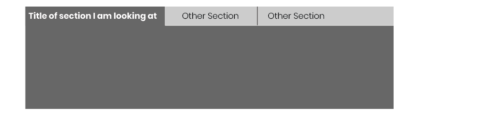
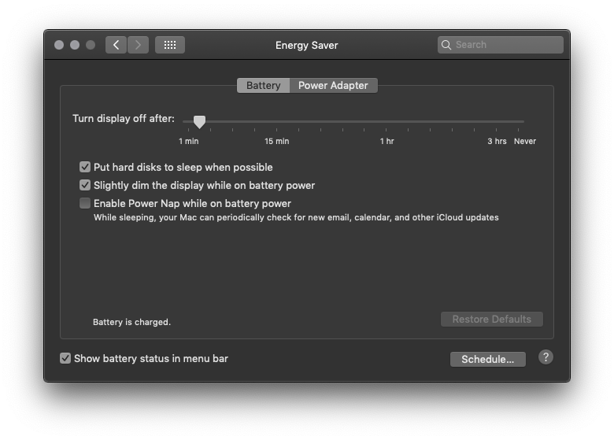

Consiste en poner contenido en paneles o "tarjetas" separadas, y apilarlas encima de forma que solo una pueda ser visible en un momento. Se deben usar "pestañas" u otro mecanismo para que el usuario las acceda.

Cuando existe demasiado contenido en una página el usuario se distrae. El contenido se podría ordenar en secciones con títulos pero podría ser demasiado para acomodarlo en una sola página. Si el usuario puede ver el contenido
en partes, no todo al mismo tiempo, el uso de pilas de tarjetas puede ser útil.
Al diseñar las tarjetas se debe tener especial cuidado en cómo se distribuye el contenido en las diferentes tarjetas. Si el contenido está mal asignado provocará que el usuario necesite moverse constantemente de una a otra
tarjeta..

Las pestañas horizontales son muy adecuadas, pero generalmente no se pueden acomodar más de seis pestañas. No es conveniente hacer un plegado de las pestañas, es mejor aplicar un corrimiento sobre las mismas.
Las tarjetas verticales puede utilizar un espacio delgado y alto que normalmente no sería fácil de utilizar en páginas con pestañas. Una columna a la derecha con una lista de nombres trabaja bien en sitios Web. Inclusive permite
organizar las tarjetas en una jerarquía. Lo que no se puede hacer con pestañas. Algunas aplicaciones utilizan un menú dinámico en la parte de arriba de la página, este toma menos espacio que un columna de enlaces, pero
el costo es la claridad.